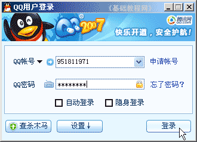
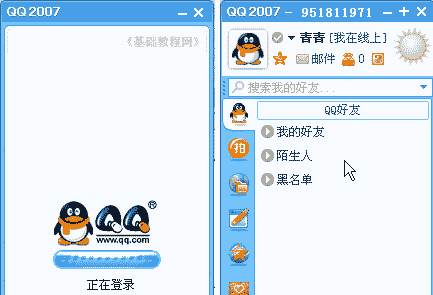
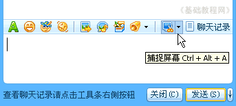
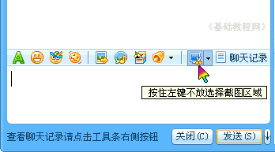
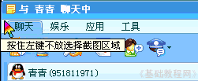
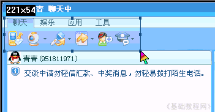
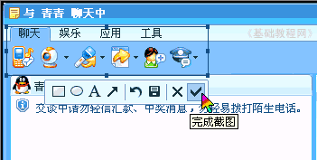
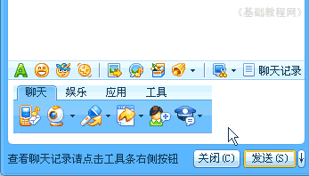
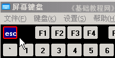

QQ聊天操作基础
八、QQ截图 返回目录
QQ还有一个很方便的功能，就是截取屏幕上的一块区域，并且可以作为图片发送或保存，下面我们来看一个练习；
1、登录QQ
1）双击桌面的QQ图标运行程序，出来一个登录面板，如果自动运行就不用点桌面图标了；
2）按照从上到下的顺序，输入自己的QQ号，这个比较安全些；

3）下面的自动登录和隐身登录可以先不勾，点击“登录”按钮，登录成功以后就可以显示出QQ面板来；

2、QQ屏幕截图
1）在面板中找到好友，双击打开聊天窗口，在输入框那儿有一排按钮，在右边找到一个有把小剪刀的，就是截图按钮；

2）点击这个按钮，鼠标指针变成一个彩色的指针，同时下面提示“按住左键拖动选择截图区域”；

3）接下来移动这个彩色鼠标指针，到上面的聊天工具栏，移到“聊天”两个字左边，

然后按住鼠标左键不松，拖动鼠标到下边按钮右边；

4）松开鼠标左键，选框下边出来一个小图片工具栏，点击右边的勾按钮，完成截图；

5）这时候在输入框里就有了一个刚才截取的图片，并且鼠标的指针也恢复正常，点“发送”按钮，就可以发出去了；

6）如果截图中想取消截图，只要点击鼠标右键就可以，点两下就可以返回到正常聊天，还可以按键盘左上角上的ESC键；

本节学习了使用QQ捕捉屏幕截图的基本方法，如果你成功地完成了练习，请继续学习下一课内容；
本教程由86团学校TeliuTe制作|著作权所有
基础教程网：http://teliute.org/
美丽的校园……
转载和引用本站内容，请保留版权信息和本站链接。